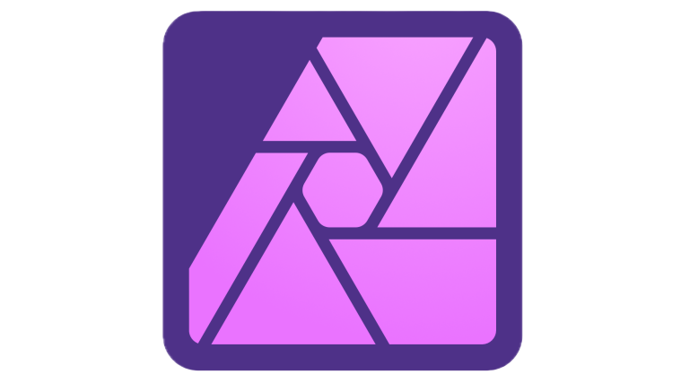
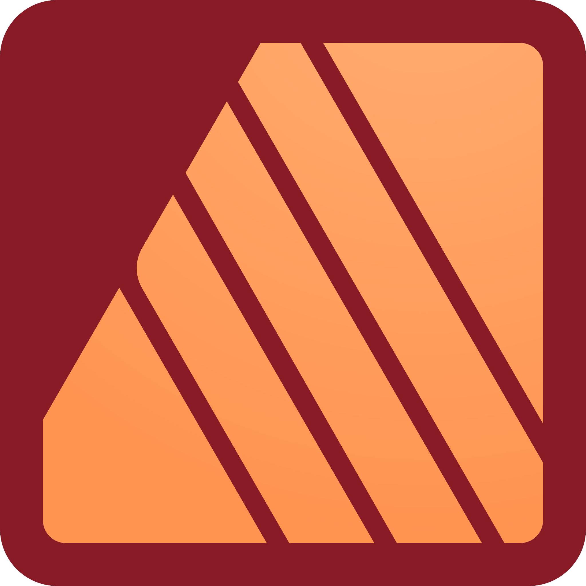
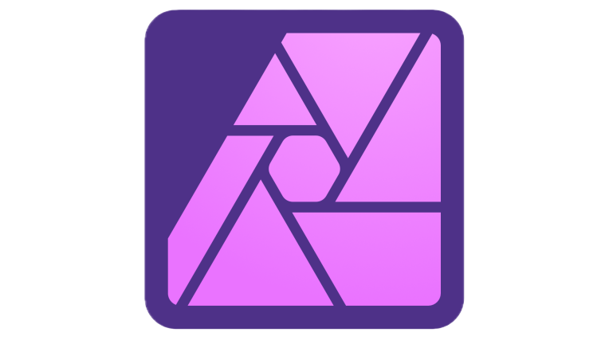
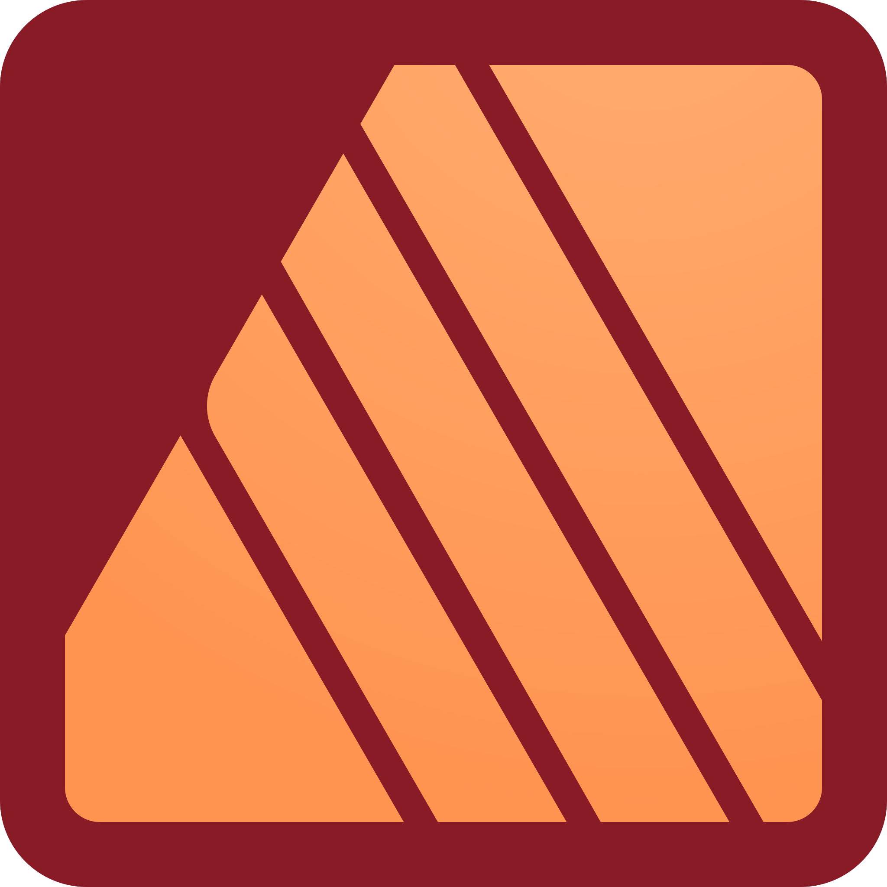

1
SAÉ 1.01 - Audit du Chantier Naval Hénaff (2024)
Audit d'une entreprise sur la communication, l'ergonomie et les attentes des utilisateurs. Analyse menée en trinôme avec SWOT, PESTEL et une étude de la concurrence. Évaluation de l'ergonomie du site web à l'aide d'outils d'analyse de trafic et de cartes mentales. Compétences développées : travail d'équipe, analyse stratégique et recherche documentaire.
2
SAÉ 1.02 - Recommandation de communication numérique (2024-2025)
Conception d'une stratégie marketing et de communication numérique en équipe de 4. Audit de la communication existante, recommandations marketing et élaboration d'un plan d'action. Utilisation de Canva et SWOT, avec analyse des forces/faiblesses et création de personas. Compétences développées : travail d'équipe, planification et analyse.
3
SAÉ 1.03 - Communication visuelle (2024-2025)
Conception de la communication visuelle du festival À l'West Fest en trinôme. Analyse de visuels existants, création de croquis et maquette, puis réalisation de l'affiche finale. Utilisation d'Affinity Designer et de cartes mentales. Compétences développées : créativité, design graphique et travail d'équipe.
4
SAÉ 1.04 - Production audio et vidéo (2024-2025)
Réalisation d'un court-métrage de 2 minutes en équipe de 4. Scénarisation (pitch, synopsis, storyboard), tournage, enregistrement des voix off et montage final. Utilisation de caméra, mixette, micro et DaVinci Resolve. Compétences développées : gestion du temps, créativité et souci du détail.
5
SAÉ 1.05 - Production d'un site web (2024-2025)
Création d'un site web sur les Pokémon en autonomie avec encadrement. Réalisation d'une planche univers, maquettage et développement. Utilisation de Figma, JavaScript, HTML, CSS et Visual Studio Code. Compétences développées : autonomie, créativité, design et développement web.
6
SAÉ 1.06 - Gestion de projet en communication numérique (2024-2025)
Réalisation d'un projet lié aux Objectifs de Développement Durable en équipe de 5. Recherche d'idées, conception et présentation. Utilisation de SWOT, PESTEL, 3QPOC, Affinity Designer et Sphinx. Compétences développées : gestion de projet, écologie et analyse stratégique.
7
Projet d'affiche de film (2024)
Création d'une affiche de film inspirée d'une œuvre existante en 4h. Recherche d'idées, croquis et conception. Utilisation d'Affinity Designer, Affinity Photo et Pinterest. Compétence développée : montage photo.
8
Projet Robot en JavaScript(2024)
Développement d'un jeu collaboratif avec un robot en JavaScript, en équipe de 3. Brainstorming, conception, programmation et tests avec fabrication du terrain de jeu. Utilisation de Microsoft Make Code. Compétences développées : gestion de projet, travail d'équipe, programmation et créativité.
9
Projet de Recyclage PC (2023-2024)
Réduction de la facture informatique et aide aux personnes via le recyclage d'ordinateurs en équipe de 3. Recherche d'idées, création d'un sondage, partenariat avec Goupil, documentation technique et déploiement des ordinateurs. Outils utilisés : Google Form, MindView, Gantt. Compétences développées : gestion de projet, écologie, planification, travail d'équipe.
 


